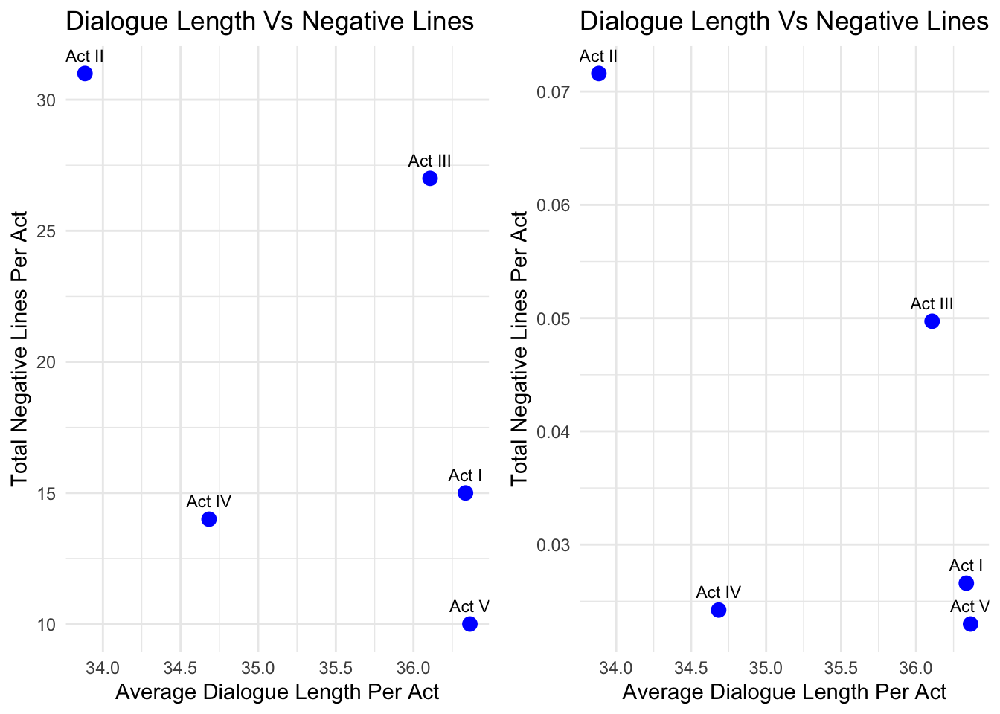

# Import Data
#| message: false
#| warning: false
library(dplyr)
Attaching package: 'dplyr'The following objects are masked from 'package:stats':
filter, lagThe following objects are masked from 'package:base':
intersect, setdiff, setequal, unionlibrary(tidyverse)── Attaching core tidyverse packages ──────────────────────── tidyverse 2.0.0 ──
✔ forcats 1.0.0 ✔ readr 2.1.5
✔ ggplot2 3.5.1 ✔ stringr 1.5.1
✔ lubridate 1.9.4 ✔ tibble 3.2.1
✔ purrr 1.0.2 ✔ tidyr 1.3.1── Conflicts ────────────────────────────────────────── tidyverse_conflicts() ──
✖ dplyr::filter() masks stats::filter()
✖ dplyr::lag() masks stats::lag()
ℹ Use the conflicted package (<http://conflicted.r-lib.org/>) to force all conflicts to become errorsmacbeth <- readr::read_csv('https://raw.githubusercontent.com/rfordatascience/tidytuesday/main/data/2024/2024-09-17/macbeth.csv')Rows: 2553 Columns: 5
── Column specification ────────────────────────────────────────────────────────
Delimiter: ","
chr (4): act, scene, character, dialogue
dbl (1): line_number
ℹ Use `spec()` to retrieve the full column specification for this data.
ℹ Specify the column types or set `show_col_types = FALSE` to quiet this message.# Total Number of Negative Lines in each act
neg_lines <- macbeth |>
mutate( blood = str_detect( dialogue, "(?i)blood|(?i)murder[er]|(?i)death|(?i)kill" ) ) |>
filter( blood ) |>
group_by( act ) |>
summarize( average_negative_lines = n() )
# Average Character per Line in each act
average_words <- macbeth |>
mutate( string_length = str_length( dialogue ) ) |>
group_by( act ) |>
summarize( average_words = mean( string_length ) )
negative_words <- left_join( neg_lines, average_words )Joining with `by = join_by(act)`ggplot( negative_words, aes(x = average_words, y = average_negative_lines, label = act)) +
geom_point(color = "blue", size = 3) +
geom_text(vjust = -1, size = 4) +
labs(title = "Average Words vs. Negative Lines in each act of Macbeth",
x = "Average Words per Act",
y = "Number of Lines with Negative Words" ) +
theme_minimal()